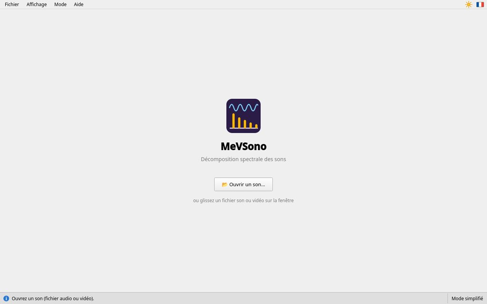
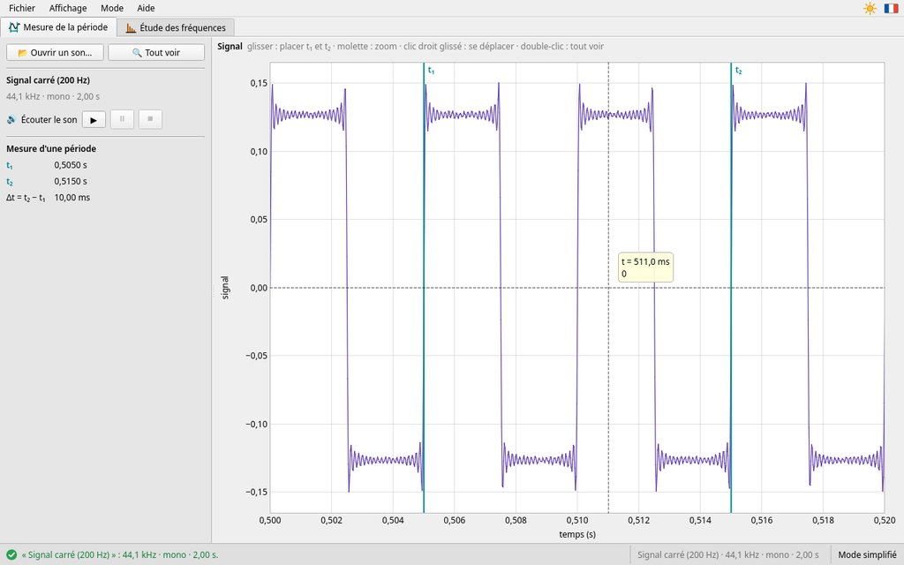
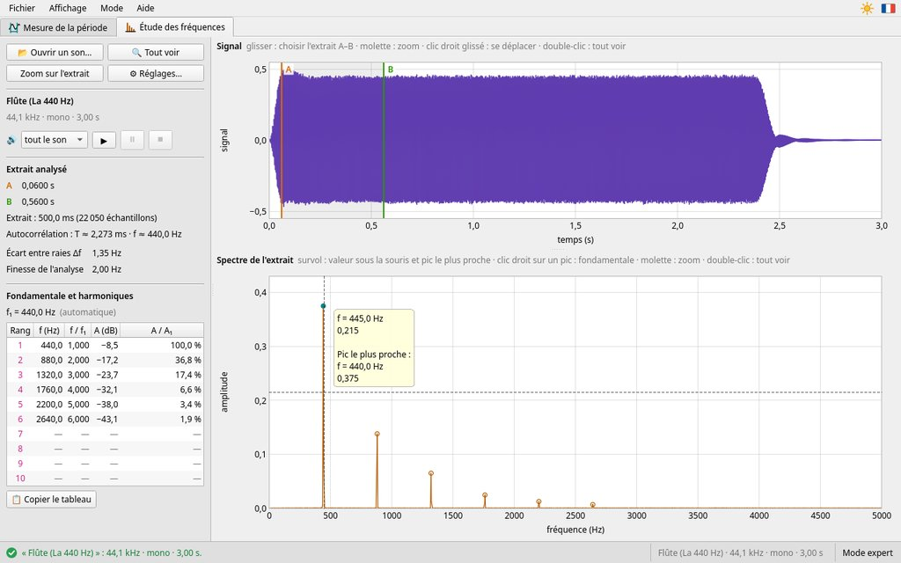
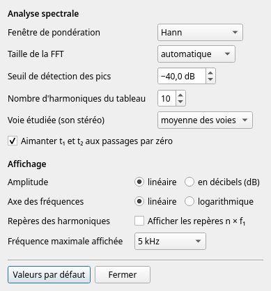

MeVSono — Notice d'utilisation
Décomposition spectrale des sons · version {{version}}
1. À quoi sert MeVSono ?
MeVSono sert à étudier un son : celui d'un instrument, d'une voix, d'un diapason… Il le montre de deux façons, dans deux onglets :
- le signal : comment le son varie au cours du temps, comme sur un oscilloscope. Dans l'onglet Mesure de la période, on y mesure la période du son ;
- le spectre, sous le signal dans l'onglet Étude des fréquences : les fréquences qui composent le son, chacune avec son amplitude. On y lit la fondamentale, qui fixe la hauteur de la note, et les harmoniques, qui font le timbre de l'instrument.
MeVSono est un instrument de mesure : il donne des instants, des durées et des fréquences. Les calculs (période, fréquence, rapports entre les harmoniques) sont votre travail.
2. La fenêtre

- 1Les deux onglets : Mesure de la période (le signal seul, et les curseurs t₁ et t₂) et Étude des fréquences (l'extrait choisi entre A et B, et son spectre). Ctrl+Tab passe de l'un à l'autre.
- 2En haut du panneau de gauche : ouvrir un son (📂 Ouvrir un son…), revoir tout le signal et tout le spectre (🔍 Tout voir), ou seulement l'extrait (Zoom sur l'extrait).
- 3Thème et langue, à droite des menus : le soleil (thème clair) ou la lune (thème sombre), et le drapeau de la langue. Un clic passe à l'autre thème ou à l'autre langue.
- 4Le son ouvert (son nom, sa fréquence d'échantillonnage, mono ou stéréo, sa durée) et ses boutons d'écoute ▶ ⏸ ⏹.
- 5Les mesures de l'onglet : ici, l'extrait analysé, entre A et B ; dans l'autre onglet, les instants t₁ et t₂ et leur écart Δt.
- 6Le signal. Glisser dessus choisit l'extrait (ou, dans l'autre onglet, place t₁ et t₂).
- 7Le spectre de l'extrait. Le réticule donne la valeur sous la souris et celle du pic le plus proche.
- 8Barre d'état : à gauche, ce qui vient de se passer (en vert, une réussite ; en orange, un avertissement ; en rouge, un problème) ; à droite, le son ouvert et le mode.
Une aide à portée de souris. Au-dessus de chaque graphique, une ligne grise rappelle les gestes possibles. Dans le panneau de gauche, les textes gris disent quoi faire.
3. Ouvrir un son
Au lancement, MeVSono propose d'ouvrir un son.


Bouton 📂 Ouvrir un son… (ou Ctrl+O), ou glissez le fichier sur la fenêtre. MeVSono lit les sons (WAV, MP3, M4A, OGG, FLAC…) et la piste son des vidéos (MP4, MOV…) : l'enregistrement d'un téléphone convient très bien.
Le son s'affiche dans l'onglet Mesure de la période. MeVSono choisit aussi un extrait (au départ, presque tout le son, entre les curseurs A et B) : son spectre est dans l'onglet Étude des fréquences.
4. Écouter le son
Les boutons d'écoute sont sous le nom du son, dans le panneau de gauche. Dans l'onglet Mesure de la période, ils jouent tout le son ; dans l'onglet Étude des fréquences, l'extrait, entre A et B.
- ▶ lance l'écoute : un trait rouge avance sur le signal, à l'instant entendu.
- ⏸ met en pause ; ▶ reprend au même endroit.
- ⏹ arrête : la prochaine écoute repart du début.
La touche Espace lance l'écoute ou la met en pause.
Écoutez l'extrait avant de le mesurer : il doit contenir la note tenue, sans silence.
5. Mesurer une période
Un son musical est périodique : le même motif se répète. Sa durée est la période T, et la fréquence est f = 1 / T.


- Cliquez sur l'onglet Mesure de la période, en haut de la fenêtre.
- Zoomez sur le signal avec la molette de la souris, jusqu'à voir quelques motifs bien nets.
- Glissez (clic gauche maintenu) d'un point du motif jusqu'au même point d'un motif suivant : les curseurs turquoise t₁ et t₂ s'y placent. Ils « s'aimantent » sur le passage par zéro montant le plus proche : inutile de viser au pixel près. Attrapez-les pour les déplacer.
- Lisez dans le panneau de gauche t₁, t₂ et la durée Δt = t₂ − t₁.
- Comptez le nombre n de motifs entre t₁ et t₂, puis calculez T = Δt / n et f = 1 / T.
Mesurer sur plusieurs périodes pour mesurer mieux. L'erreur sur la position des curseurs se partage entre les n périodes : sur 10 périodes, elle est 10 fois plus petite que sur une seule.
Survolez le signal : une bulle donne l'instant t sous la souris. Chaque onglet garde son propre zoom : on mesure la période de près, on choisit l'extrait de plus loin. Mesurer une durée ne change pas l'extrait analysé. Pour lire le spectre, passez à l'onglet Étude des fréquences.
6. Lire le spectre
Le spectre, dans l'onglet Étude des fréquences, montre les fréquences présentes dans l'extrait. Chaque pic est une fréquence ; sa hauteur est son amplitude.
- Un son pur (le diapason) donne un seul pic.
- Un son composé (une flûte, une voix) donne une série de pics. Le premier est la fondamentale f₁ : c'est la fréquence de la note. Les autres sont les harmoniques, aux fréquences fn = n × f₁ (2 f₁, 3 f₁…).
Mesurer la fréquence d'un pic
Placez la souris près du pic, sur le spectre (figure de la partie 2). Le réticule affiche :
- la valeur sous la souris : la fréquence et l'amplitude à l'endroit du pointeur ;
- le pic le plus proche, marqué d'un rond plein : sa fréquence et son amplitude. C'est cette valeur qu'on note. Inutile de viser le sommet exactement.
Zoomez avec la molette pour séparer des pics proches ; double-cliquez pour revoir tout le spectre.
Hauteur et timbre. Deux instruments qui jouent la même note ont la même fondamentale : le son a la même hauteur. Leurs harmoniques n'ont pas les mêmes amplitudes : le son n'a pas le même timbre. Un tuyau fermé à un bout (tuyau d'orgue bouché) n'a que les harmoniques impairs (f₁, 3 f₁, 5 f₁…).
7. Choisir l'extrait analysé
Le spectre est celui de l'extrait choisi sur le signal, entre les curseurs A (orange) et B (vert).
- Cliquez sur l'onglet Étude des fréquences, en haut de la fenêtre.
- Glissez sur le signal d'un instant à un autre : l'extrait, grisé, va de A à B. Pour ajuster, attrapez A ou B ; un simple clic amène le curseur le plus proche sous la souris. A reste toujours avant B : un curseur s'arrête sur l'autre.
- Le spectre se recalcule aussitôt. Le panneau de gauche donne A, B et la durée de l'extrait.
Choisissez un extrait où le son est stable : la note tenue, sans le début (l'attaque) ni un silence. Zoom sur l'extrait montre l'extrait en grand sur le signal.
Plus l'extrait est long, plus le spectre est fin. Deux fréquences ne sont séparées que si leur écart dépasse environ 1 / (durée de l'extrait) : 10 Hz pour un extrait de 0,1 s, 1 Hz pour 1 s. Si les pics sont larges, allongez l'extrait.
8. Exemple : un signal carré
Un générateur (GBF) délivre un signal carré de 200 Hz à un haut-parleur ; le son est enregistré, puis ouvert dans MeVSono.
- Période. Dans l'onglet Mesure de la période, encadrez deux motifs (figure de la partie 5) : Δt = 10,00 ms pour n = 2 motifs, donc T = Δt / 2 = 5,00 ms.
- Fréquence. f = 1 / T = 1 / (5,00 × 10−3 s) = 200 Hz.
- Spectre. Dans l'onglet Étude des fréquences, survolez le premier pic : le pic le plus proche est à 200 Hz. C'est la fondamentale f₁, égale à la fréquence calculée : les deux mesures se confirment.
- Harmoniques. Les pics suivants sont à 600 Hz, 1000 Hz, 1400 Hz… soit 3 f₁, 5 f₁, 7 f₁ : un signal carré n'a que des harmoniques impairs, de plus en plus faibles.
À vous : faites de même avec un instrument, puis avec votre voix. Quels harmoniques sont présents ? Lequel est le plus fort ?
9. Souris et clavier
| Action | Geste |
|---|---|
| Placer t₁ et t₂ (onglet Mesure de la période) | glisser sur le signal |
| Choisir l'extrait (onglet Étude des fréquences) | glisser sur le signal |
| Déplacer un curseur | l'attraper et glisser ; ou cliquer : le plus proche vient sous la souris |
| Zoomer (signal, spectre) | molette, autour de la souris |
| Se déplacer | clic droit maintenu, ou Maj+molette |
| Tout revoir | double-clic, ou 🔍 Tout voir |
| Lire un instant, une fréquence | survoler le signal ; survoler le spectre près du pic |
| Passer à l'autre onglet | Ctrl+Tab (ou Ctrl+Page suivante) |
| Écouter, mettre en pause | Espace, ou ▶ ⏸ ⏹ |
| Ouvrir un son | Ctrl+O, ou glisser le fichier sur la fenêtre |
| Agrandir ou réduire les textes | Ctrl++, Ctrl+− ; Ctrl+0 : taille normale |
| Ouvrir cette notice | F1, ou Aide › Notice d'utilisation… |
10. En cas de problème
- « Impossible de lire… : format non reconnu »
- Le fichier n'est pas un son ou une vidéo lisible. Enregistrez-le en WAV ou en MP3 (par exemple avec l'application du téléphone), ou demandez à votre professeur.
- « Ce fichier ne contient pas de son »
- La vidéo a été filmée sans le son, ou le son a été coupé.
- Un message orange s'affiche à l'ouverture du son.
- Le son n'est lu qu'en partie : « seules les 30 premières minutes sont lues » (son trop long), « la suite du fichier est illisible : seul le début est lu » ou « des valeurs du fichier sont illisibles : elles sont mises à 0 » (fichier abîmé). Choisissez l'extrait dans la partie lue, ou enregistrez le son de nouveau.
- Le signal n'est qu'une bande pleine.
- Le son dure longtemps : on ne voit que son enveloppe. Zoomez avec la molette pour voir apparaître les motifs.
- « Extrait trop court : élargissez-le entre A et B »
- A et B sont presque l'un sur l'autre : écartez-les (partie 7).
- Le réticule n'indique pas le pic voulu.
- Zoomez sur le spectre (molette) pour séparer les pics proches, puis approchez la souris du pic.
- Les pics sont larges, ou deux pics se confondent.
- Allongez l'extrait (partie 7).
- On n'entend rien.
- Vérifiez le volume et la sortie de l'ordinateur (haut-parleurs ou casque). « Aucune sortie audio (haut-parleurs ou casque) n'est disponible » signale qu'il n'y en a aucune de branchée.
- Les textes sont devenus énormes (ou minuscules).
- Ctrl+0 rétablit la taille normale.
- « MeVSono a rencontré une erreur imprévue et doit se fermer »
- Une erreur imprévue s'est produite. Le message dit où les détails ont été enregistrés. Relancez MeVSono et prévenez votre professeur.
Pour les professeurs
Les deux modes, les réglages de l'analyse, l'installation et la configuration de la salle.
11. Mode simplifié, mode expert
Le menu Mode propose deux modes ; le mode en cours est rappelé à droite de la barre d'état, et retenu d'une séance à l'autre.
- Simplifié (par défaut) : les mesures seulement, celles décrites dans la partie élèves. L'extrait initial couvre les 80 % du milieu du son ; l'écoute joue tout le son dans l'onglet Mesure de la période, l'extrait dans l'onglet Étude des fréquences ; t₁ et t₂ sont toujours aimantés aux passages par zéro montants ; l'affichage est fixe (fenêtre de Hann, amplitudes linéaires, fréquences jusqu'à 5 kHz). Le logiciel ne donne ni la fondamentale ni la période, et n'exporte rien : l'élève mesure.
- Expert : toutes les options (partie 12). L'extrait initial dure une demi-seconde, sur la partie la plus forte du son.
Les réglages du mode expert sont gardés quand on repasse en mode simplifié. Pour imposer un mode à toute une salle, voir la partie 15.
12. Le mode expert


- Fondamentale et harmoniques : MeVSono cherche la fréquence f₁ dont les multiples correspondent le mieux aux pics (les pics repérés sont entourés d'un petit rond sur le spectre). Le tableau donne, pour chaque rang n, la fréquence mesurée, le rapport f / f₁, l'amplitude en décibels et rapportée à celle de la fondamentale. Un tiret signale un rang sans pic (harmoniques pairs d'un tuyau bouché ou d'un signal carré). 📋 Copier le tableau le copie, à coller dans un tableur ou un document.
- Clic droit sur un pic du spectre : « Prendre le pic de … comme fondamentale ». f₁ est alors marquée « (à la main) », et Détection automatique revient au choix du logiciel.
- Autocorrélation : période de l'extrait trouvée par le logiciel. Le signal est comparé à lui-même décalé, et se ressemble le plus pour un décalage d'une période. Utile pour vérifier une mesure.
- Écart entre raies Δf : l'écart entre deux fréquences calculées par la FFT. Finesse de l'analyse : l'écart en dessous duquel deux fréquences ne sont pas séparées (environ 1 / durée de l'extrait). Leurs bulles donnent le détail du calcul.
- Aimanter t₁ et t₂ aux passages par zéro (onglet Mesure de la période, coché par défaut) : décochez pour placer les curseurs librement, sur une crête par exemple.
- Écoute : la liste à gauche de ▶ choisit « tout le son » ou « l'extrait A–B », dans les deux onglets.
- Menu Affichage : amplitudes « en décibels (dB) », axe des fréquences « logarithmique », « Afficher les repères n × f₁ », « Voie étudiée » d'un son stéréo (moyenne des voies, gauche ou droite), ⚙ Réglages… (aussi en haut du panneau de gauche).
- Exports (menu Fichier), en CSV :
💾 Exporter le spectre (CSV)… (
spectre.csv: colonnesf (Hz),A,A (dB), toutes les raies jusqu'à fe / 2) et 💾 Exporter l'extrait du signal (CSV)… (extrait.csv:t (s),signal, chaque échantillon entre A et B)..csvest ajouté à un nom tapé sans extension ; MeVSono demande avant de remplacer un fichier. En français, les colonnes sont séparées par;avec la virgule décimale. En Python :pandas.read_csv("spectre.csv", sep=";", decimal=",").
13. Réglages de l'analyse
En mode expert, ⚙ Réglages… ouvre les réglages. Ils s'appliquent aussitôt et sont conservés d'une séance à l'autre ; Valeurs par défaut les rétablit. Chaque réglage a sa bulle d'explication.


Fenêtre de pondération
Avant le calcul, l'extrait est multiplié par une « fenêtre » qui l'atténue à ses bords : sans elle, le début et la fin brusques de l'extrait étaleraient chaque pic (fuite spectrale).
| Fenêtre | Usage |
|---|---|
| Hann (par défaut) | le bon choix pour la plupart des sons : pics fins, fréquences et amplitudes précises |
| rectangulaire | aucune pondération : pics les plus fins, mais forte fuite et amplitudes approximatives |
| Hamming | proche de Hann |
| Blackman, Blackman-Harris | pics plus larges, mais fuite très faible : pour voir des harmoniques faibles |
| à sommet plat | pics larges et plats : la mesure la plus juste des amplitudes |
Taille de la FFT
Le spectre est calculé par transformée de Fourier rapide (FFT). En taille automatique, tout l'extrait est analysé d'un seul tenant, complété par des zéros jusqu'à une puissance de 2 (au-delà de 262 144 échantillons, environ 6 s, il est découpé comme ci-dessous). Une taille fixée (de 1 024 à 262 144 points) plus petite que l'extrait le découpe en segments qui se recouvrent de moitié, et fait la moyenne de leurs spectres : le spectre est plus lisse, mais moins fin. L'écart entre raies est Δf = fréquence d'échantillonnage / taille de la FFT ; la fréquence des pics est affinée par interpolation, bien en dessous.
Autres réglages
- Seuil de détection des pics : un pic plus faible que le plus grand de cette valeur est ignoré (−40 dB : 1 % de son amplitude), y compris pour le « pic le plus proche » du réticule. Baissez-le pour repérer des harmoniques faibles.
- Nombre d'harmoniques du tableau (10 par défaut, jusqu'à 40).
- Voie étudiée (son stéréo) : moyenne des voies, gauche ou droite.
- Aimanter t₁ et t₂ aux passages par zéro, comme la case du panneau.
- Amplitude linéaire ou en dB, axe des fréquences linéaire ou logarithmique, repères des harmoniques (traits pointillés roses, numérotés, aux fréquences n × f₁), fréquence maximale affichée (5 kHz par défaut, de 1 à 20 kHz, ou jusqu'à fe / 2).
Les amplitudes sont des amplitudes de sinusoïdes : un son pur d'amplitude 0,5 donne un pic de hauteur 0,5. Elles dépendent du réglage du microphone : on compare surtout les amplitudes entre elles.
14. Idées pour la classe
- Enregistrer un son : un téléphone (application dictaphone) convient très bien. Le tenir à quelques dizaines de centimètres de la source, dans une pièce calme, et éviter la saturation (signal écrêté en haut et en bas) : elle crée de faux harmoniques.
- Hauteur et timbre : la même note jouée par deux instruments (même fondamentale, harmoniques différents), ou deux notes du même instrument. Un tuyau ouvert aux deux bouts a tous les harmoniques, un tuyau fermé à une extrémité seulement les impairs.
- Corde pincée : son qui s'éteint ; prendre l'extrait juste après l'attaque.
- Battements : deux diapasons de 440 Hz et 444 Hz joués ensemble ; un extrait de 0,1 s ne sépare pas les deux fréquences, un extrait de 1 s les sépare. L'enveloppe du signal varie 4 fois par seconde.
- Mesures croisées : comparer la fréquence calculée à partir de la période à celle du premier pic du spectre (partie 8).
15. Installer et configurer
Installation
Les fichiers à installer sont sur la page des versions (« Releases ») du dépôt : github.com/melectronvolt/MevSuite/releases.
- Windows, sans installation : MeVSono tient dans un dossier (archive
MeVSono-version-windows-x64.zip), à copier sur le poste, le réseau du lycée ou une clé USB ; lancermevsono.exe. Il fonctionne hors connexion, notice comprise. Au premier lancement, Windows peut afficher « Windows a protégé votre ordinateur », car MeVSono n'est pas signé numériquement : cliquer sur « Informations complémentaires », puis « Exécuter quand même ». Pour ouvrir un son directement : clic droit sur le fichier → « Ouvrir avec… » → MeVSono. - Windows, installateur :
MeVSono-version-windows-x64-setup.exeinstalle MeVSono pour tous les utilisateurs dansProgram Files\MeVSuite\MeVSono, avec un raccourci dans le menu Démarrer (dossier MeVSuite) ; il se désinstalle par les Paramètres de Windows. Une nouvelle version remplace l'ancienne ; les réglages des utilisateurs sont gardés. Déploiement sur un parc (WAPT, GPO), sans fenêtre ni question, installation puis désinstallation :MeVSono-version-windows-x64-setup.exe /VERYSILENT /SUPPRESSMSGBOXES /NORESTART "C:\Program Files\MeVSuite\MeVSono\unins000.exe" /VERYSILENT /SUPPRESSMSGBOXES /NORESTART - Linux : paquet
.deb(Ubuntu 26.04) ou.rpm(Fedora 45), qui ajoute MeVSono au menu des applications et à « Ouvrir avec » des fichiers son ; ouMeVSono-version-x86_64.AppImage, qui se lance sans installation (le rendre exécutable). - Formats : WAV, MP3, OGG, Opus, FLAC, M4A et AAC, AIFF, CAF ; la piste son des
vidéos MP4, MOV, M4V, MKV, WebM, AVI. Les autres formats sont lus si ffmpeg est installé sur le poste,
ou placé dans un dossier
ffmpegà côté du programme (la version Windows l'apporte, les paquets.debet.rpml'installent). Les sons sont lus jusqu'à 30 minutes. - Vidéoprojecteur : Ctrl++ agrandit les textes et les graphiques ; Ctrl+0 revient à la taille normale.
Réglages conservés
Au premier lancement, MeVSono prend la langue et le thème clair ou sombre du système (anglais si la langue n'est ni le français ni l'anglais). Les nombres suivent la langue : virgule décimale en français, point en anglais.
MeVSono retient d'une séance à l'autre le mode, la langue, le thème, les réglages de l'analyse,
l'agrandissement des textes, le dernier dossier ouvert et la taille de la fenêtre, dans un petit
fichier texte mevsono.ini, propre à chaque utilisateur et modifiable à la main ; le
supprimer rétablit les valeurs par défaut.
| Système | Emplacement |
|---|---|
| Windows | %APPDATA%\MeVSuite\mevsono.ini |
| Linux | ~/.config/MeVSuite/mevsono.ini |
Réglages imposés
Un fichier mevsono.ini imposé (salle informatique, clé USB) est lu à chaque lancement
et l'emporte sur les réglages de l'utilisateur ; MeVSono ne l'écrit jamais. Sous Windows, il se place
dans le dossier de mevsono.exe (C:\Program Files\MeVSuite\MeVSono avec
l'installateur, ou le dossier de la version portable) ; sous Linux, dans /etc/MeVSuite/
(paquets et AppImage). Par exemple :
mode = simple
language = fr
theme = lightfait démarrer tous les postes en mode simplifié, en français et en thème clair. Les clés possibles
sont celles du fichier de l'utilisateur ; language et theme acceptent aussi
auto (langue ou thème du système). Les chemins des deux fichiers sont affichés dans
Aide › À propos de MeVSono…
Les quatre logiciels de la suite (MeVPix, MeVCine, MeVReg, MeVSono) rangent leurs réglages dans
ce même dossier MeVSuite. La notice est écrite à chaque ouverture dans le dossier
temporaire du système (mevsono-help) : on peut l'imprimer ou l'enregistrer depuis le
navigateur.
16. Erreurs, contact et licence
Erreur imprévue ou plantage : MeVSono note la cause (et, pour un plantage, la pile
d'appels) dans mevsono.log, dans le même dossier que mevsono.ini, puis
affiche « MeVSono a rencontré une erreur imprévue et doit se fermer », avec le chemin du fichier. Le
journal ne garde que la dernière erreur : joignez-le à votre signalement, avec la version (Aide
› À propos de MeVSono…).
Contact : Rémi MEVAERE, suite@sciences-physiques.net. Remarques, idées d'amélioration et problèmes sont les bienvenus.
Licence : MeVSono est un logiciel libre, distribué sous licence MIT ; il est écrit
en C++ avec les bibliothèques libres Qt et Qt Multimedia (licence LGPL version 3) et s'appuie sur
FFmpeg pour lire les sons. Les composants utilisés et leur licence sont indiqués dans
Aide › À propos de MeVSono… ; Aide › À propos de Qt… donne la
version de Qt et ses conditions de licence. Sous Windows, les licences des bibliothèques livrées sont
dans le dossier licences, à côté du programme.